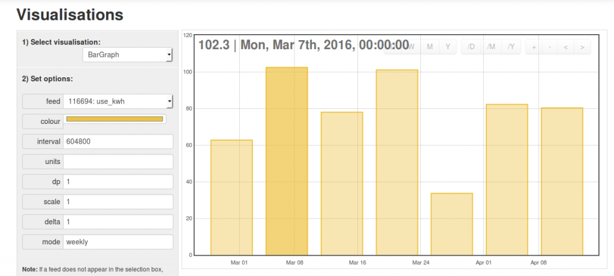
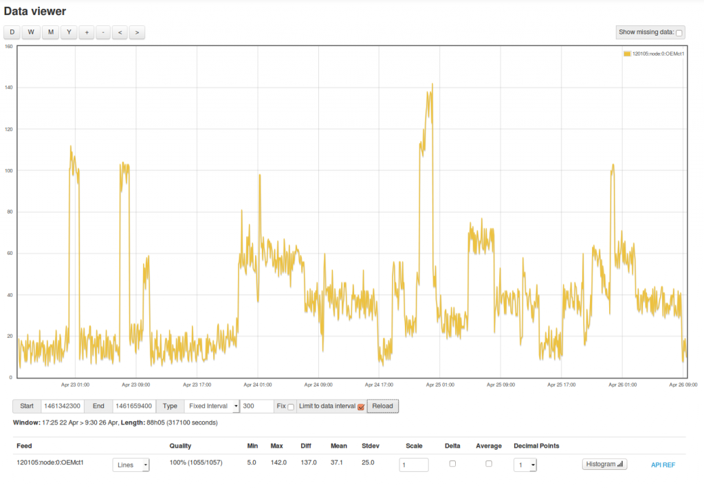
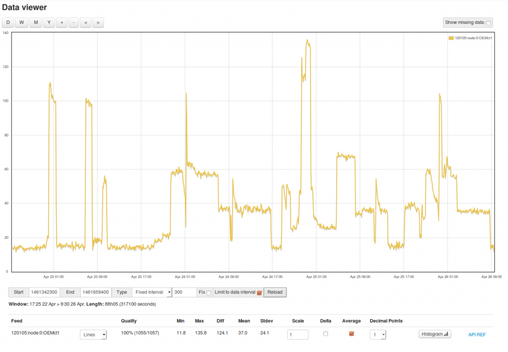

I've been working on improving emoncms support for timezone correct daily, weekly & monthly kWh data and also fully calculated average (mean) temperature, humidity, power etc.
Its now possible to access, view and export to CSV these values from the new emoncms graph interface as a start.
This screenshot shows average daily power data calculated from a power feed overlayed against daily kWh as calculated from a cumulative kWh feed. Both approaches arrive at the same values (apart from a few small differences if there are outages). But it illustrates that the calculation of daily mean is aligned correctly.
{kind=link}
The request type can be selected from the type drop down menu and includes types:
- Interval - specify a periodic fixed interval at which to request datapoints i.e a data point every 3600 seconds.
- Daily - daily data correct to timezone set in user profile
- Weekly - weekly data correct to timezone set in user profile
- Monthly - monthly data correct to timezone set in user profile
To return the average for the period selected the average tickbox needs to be ticked, otherwise the value at the timestamp of the start of each interval will be returned - which is what is needed in the case of calculating kWh data from cumulative kWh feeds.
On request the averages are calculated on the fly in the background, the result is cached so that next time an average is requested the whole feed does not have to be processed. Because of the way this works at the moment 'reload' needs to be clicked twice once to register the feed for averaging and second to display the result. I will be working on a way to make this a more seamless experience.
While most of the implementation for this is currently working on the emoncms master branch the part that registers the feed for background processing of averages is not yet complete and so the averaging will only work up to 7 days there while on emoncms.org averages covering the full feed can be returned. There are a couple of things left to do to fully complete this but for anyone keen to test its present state this is now available on emoncms.org and the master branch for testing.
Re: Emoncms daily, weekly, monthly kWh and averaging
daily, weekly, monthly data can be accessed from the vis > bargraph by setting mode to daily, weekly or monthly:
Weeks are aligned to midnight (Start of the day) on monday of every week:

Re: Emoncms daily, weekly, monthly kWh and averaging
Two good examples of feed data on emoncms.org with and without averaging enabled


Re: Emoncms daily, weekly, monthly kWh and averaging
Hi Trystan - Please could you take a look at the recent issues posted in the The Official Emoncms Android App thread as those issues seem to coincide with the changes made to emoncms for these new features.
Paul
Re: Emoncms daily, weekly, monthly kWh and averaging
Thanks Paul.
One of the more useful parts of the new graph interface in emoncms is the CSV export tool. Its possible to select a feed, select an average interval or select for daily, weekly, monthly output then select the data range with the graph view and view the CSV output at the bottom. Its then quite easy to copy and paste this into excell for further analysis and visualisation if the inbuilt emoncms tools dont cover what you need.
You can also select the time format for the csv output: unix timestamp, seconds since start time or date time string.
I've also been using the histogram view in the graph view to calculate the amount of time my heatpump is on standby to work out how that standby consumption affects COP, it can tell you the amount of time in seconds spent at say 0-50W 50-100W etc or when its actually running.
Re: Emoncms daily, weekly, monthly kWh and averaging
Hi Trystan
What you are doing here is very interesting, I haven't explored in-depth yet but now you mention the download api I wonder if what you are doing can be extended to facilitate something I intend to look at down the line.
I have a need to be able to distribute links to specific data for clients to use in their own presentations. I think the API behind those links could be of great use to many users and also allow custom data export functions to be placed as a single button on a dashboard, for example to currently download the last 7 days of daily data we need to navigate emoncms for a graphical route or manually write an API url using the start point in unix, the end point in unix the feed id and an interval (currently in secs but I guess this will change with what you are doing here) etc etc
I have had to issue the API url with lengthy instructions on how to alter the start and end points using a unix timestamp website when what I really want to do is issue a url that defaults to today as a default end time and calculates the start time from a "number of intervals" field so that the same url will always yield the same "last 7 days" and can easily be edited to report 30days or 365days by editing the one variable, preferably on the end.
This would allow hyperlinks and dash buttons to have labels like
Download the last 7 days daily solar totals
Download the last 30 days average daily temperatures
Download the the last 12 months imported energy totals
for use in excel, PP presentations and also to potentially integrate with other systems and softwares easily. Going back to our recent discussions on the apikeys, a single url (with read apikey) to a dashboard with API buttons (with read apikey) as described above could give any business, office or school etc the means to grant "one-click" access to pre-defined historic data, to all employees/students etc without them logging into emoncms or learning the intricacies of the raw api or making the data public. and all parties will be accessing the same data (different time windows) in a centrally administered way.
Paul
Edit - Combining multiple feeds in the same API url would be a great addition too as this would effectively be a basic report writer
Re: Emoncms daily, weekly, monthly kWh and averaging
Good ideas there. It should be possible to adapt the api to provide those options, if parameters start and end are not set it could look for another, how about: period, timewindow, range? It might be possible for it to distinguish between 3600 (seconds) and 7days
&period=7days
I dont think adding this would be too much work and it shouldnt affect normal operation.